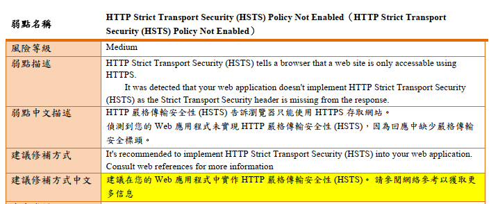
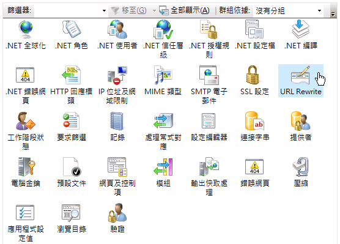
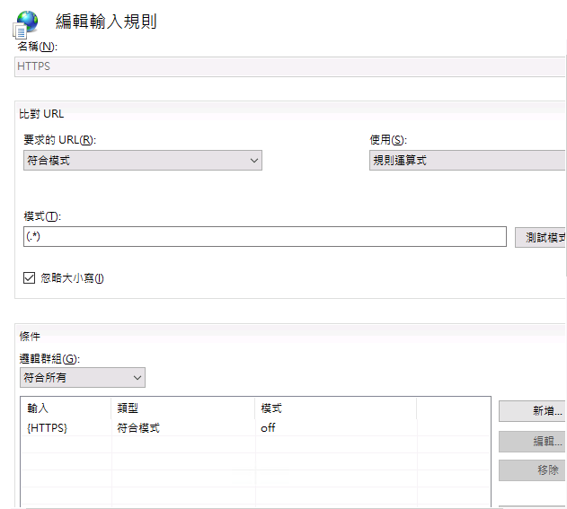
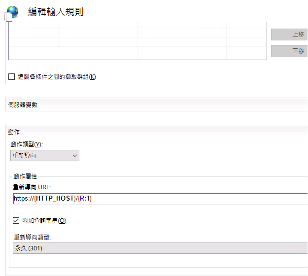
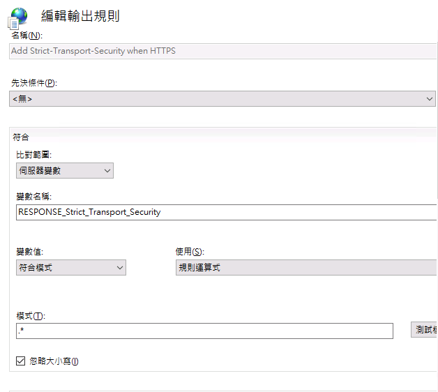
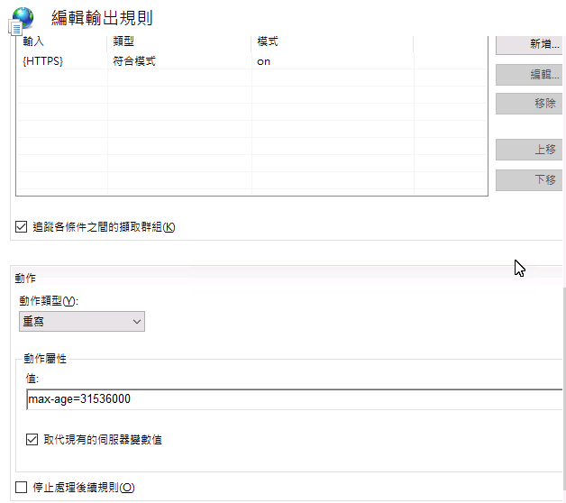

你的網站已經設定 HTTPS 了嗎？光設定 HTTPS 還不夠——本文拆解 HSTS 的運作原理，並示範在 IIS 上的兩種設定方式。
問題發現：弱點掃描警告
最近在進行專案的弱點掃描時，發現了一個低風險的問題：

弱點說明提到：應用程式未設定 HTTP Strict Transport Security (HSTS) 標頭。這可能讓攻擊者有機會進行 HTTPS 降級攻擊，竊取敏感資訊。
什麼是 HSTS？為什麼這麼重要？
HSTS 全名是 HTTP Strict Transport Security，定義於 RFC 6797，是一個 HTTP 擴充標準。它的主要功能是：
- 強制瀏覽器使用 HTTPS 與網站進行通訊
- 有效防禦 SSL 剝離攻擊
- 保護使用者的敏感資訊
- 避免憑證警告被忽略
HSTS 運作原理
讓我們看看 HSTS 是如何運作的：
- 使用者第一次存取網站
- 伺服器在回應中加入 HSTS 標頭
- 瀏覽器記住這個安全設定
- 之後瀏覽器在發出請求前，會於本機直接將 HTTP 升級為 HTTPS（307 Internal Redirect），不會先送出不安全的請求
- 有效防止中間人攻擊
HSTS 的兩種設定方式
在 IIS 中，有兩種方式可以設定 HSTS：
1. 使用 CustomHeaders（簡單但不夠完善）
1 | <system.webServer> |
注意：
includeSubDomains會讓所有子網域也強制走 HTTPS。若有任何子網域尚未支援 HTTPS，加上這個指令前請先確認，否則該子網域會完全無法存取。
2. 使用 URL Rewrite（建議使用）
先決條件：URL Rewrite 方式需要額外安裝 IIS URL Rewrite Module 2.x，它並非 IIS 內建模組。安裝後才會在 IIS 管理員出現「URL Rewrite」項目。
1 | <system.webServer> |
實務操作：在 IIS 上設定 HSTS
步驟一：設定 HTTPS 重新導向
開啟 IIS 管理員
選擇你的網站，找到「URL Rewrite」模組

新增輸入規則，設定如下：
- 名稱：HTTP to HTTPS redirect
- 模式：(.*)
- 條件：{HTTPS} 選「符合模式」，填入 ^OFF$
- 動作：選「重新導向」，URL 填 https://{HTTP_HOST}/{R:1}


步驟二：設定 HSTS 輸出規則
- 在「URL Rewrite」模組中新增輸出規則
- 設定內容：
- 名稱：Add Strict-Transport-Security when HTTPS
- 變數名稱：RESPONSE_Strict_Transport_Security
- 模式：.*
- 條件：{HTTPS} 選「符合模式」，填入 ^ON$
- 動作：選「重寫」，值填入
max-age=31536000; includeSubDomains

記得設定完成後要重新啟動網站！
常見問題 Q&A
Q1: 設定後出現重新導向次數過多怎麼辦？
如果你的 SSL 憑證是在網域防火牆處理，需要修改設定：
1 | <conditions> |
Q2: 要設定多久的 max-age 比較好？
- 測試環境：建議 300 秒（避免 301 重新導向被瀏覽器強快取）
- 正式環境：一年（31536000 秒）是普遍起點，兩年（63072000 秒）是 OWASP 建議值
- 若要申請 HSTS Preload List，需同時加上
includeSubDomains; preload指令，且 max-age 至少一年；Preload List 會讓瀏覽器在第一次連線前就強制走 HTTPS，防護更完整
Q3: 如何驗證設定是否成功？
- 使用瀏覽器開發者工具檢查回應標頭
- 使用 SSL Labs 測試
- 嘗試用 HTTP 連線，應該會自動轉為 HTTPS
參考資料
結語
HSTS 設定本身不複雜，但 includeSubDomains 的副作用、URL Rewrite Module 的安裝前置、以及 301 重新導向的快取特性，是實務上最常出問題的三個點。測試環境把 max-age 壓到 300 秒，確認行為符合預期後再上正式環境。